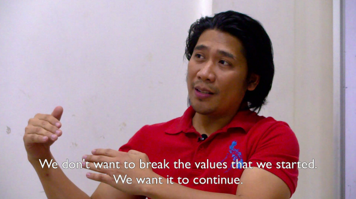
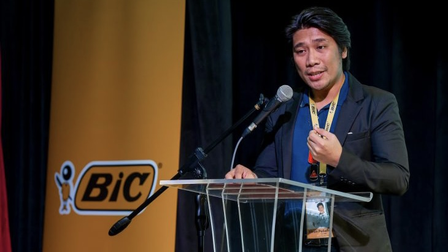
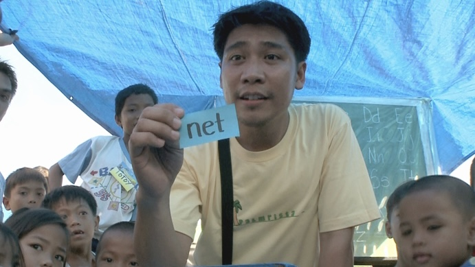
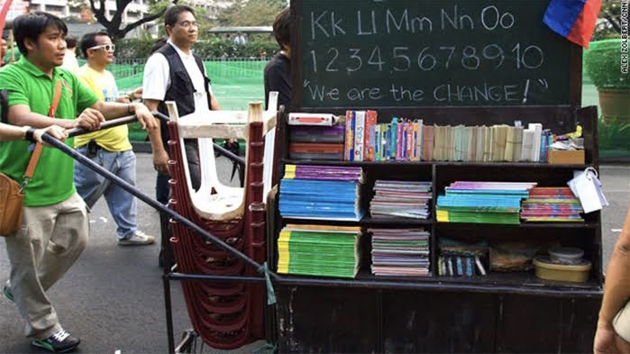
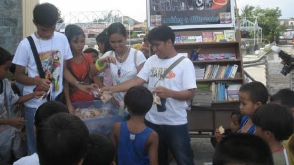
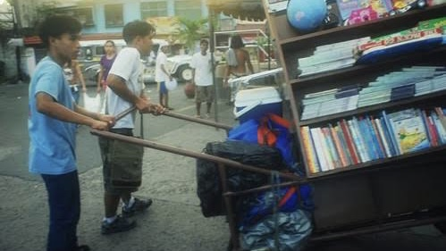
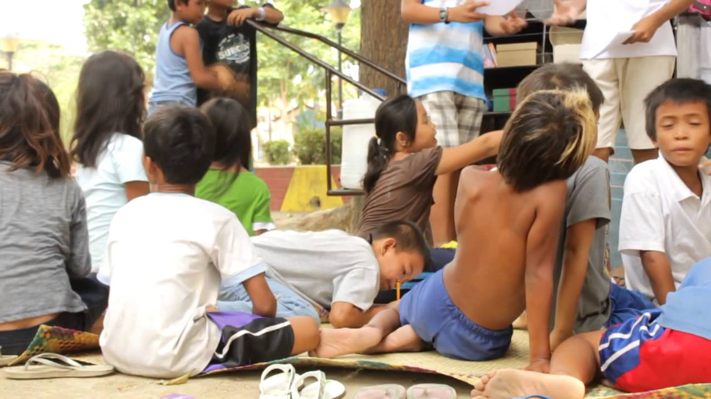
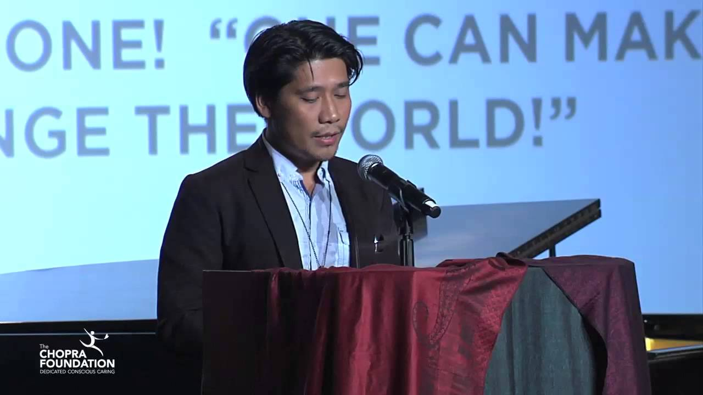

Defying the Circumstances to Define Him: Efren Peñaflorida Overcomes Adversity in Pursuit of Social Change
Written by Janalyn Lescano
Revised by Sharmaine Trellier
Revised by Sharmaine Trellier

Efren Peñaflorida refused to let the stigma pressure him to succumb to the easy way out. Born into a low-income family, Peñaflorida was a child who carried the weight of his family's survival on his shoulders. He helped his family by selling fish crackers, often navigating the treacherous streets of Baclaran and Cavite, but he held a dream close to his heart: education. "Instead of being discouraged, I promised myself that I would pursue education. I will strive hard; I will do my best," Peñaflorida recalls.

His journey was not without difficulties. As a high schooler, he was bullied, an experience that pushed him to the brink of despair and led him to contemplate joining a gang for revenge. Fortunately, Lucila, his mother, was there to remind him that he was never alone—she was always there to support him and let him feel her love for him. “She doesn’t mind the pain and hard labor to make sure that we have food on the table. She may have very limited resources to send me and my other siblings to school, but she has her own way of making both ends meet,” Peñaflorida stated. She was his first role model, a selfless and most determined woman he had ever seen, who worked tirelessly to ensure that her children had food on the table and could go to school. 

Peñaflorida found a light out of the dark when he met Harnin “KB!” Manalaysay, a pastor from Club 8586, eventually became his mentor. KB! made him realize that joining a gang would only lead him to the cemetery or jail. Spurred by this newfound understanding, Peñaflorida and his three high school friends decided to form the Dynamic Teen Company (DTC), which would divert the children from joining gangs by supporting them in their studies. Despite the agonizing experience he had with bullies, Efren Peñaflorida chose to save his perpetrators from the circumstances that coerced them from doing the undesirable. “We believe that education and faith can stop the cycle of bullying and violence. We put an emphasis on love for learning to help every child to have a better and decent life. This has become our group’s mission,” he declared. Peñaflorida has mentored former gang members, people with a substance use disorder, and dropouts; he sees the potential in them while others see the troubles they have caused. 
When he was young, Peñaflorida also learned his primary education on the back of jeepneys and under the shade of trees. Motivated by his mentor, who willingly taught him regardless of the unconventional setting, he started the Kariton Klasrum to give back and teach the impoverished children of their town, as he had also received back when he was a kid. However, societal stigma is ineradicable, even if he was trying and helping to be a part of change. “When we first started pushing carts here in Cavite, it was not accepted. The pushcart is not a symbol of education; it’s a symbol of poverty in the Philippines,” Peñaflorida stated, sharing how people contempt and belittle them by teaching using kariton. “They laughed at us because we use a pushcart. They threw stuff at us, shouting: “Ayan! Ayan na yung mga basurero!” (Here come the garbage collectors!) Our volunteers just walked with their heads down, but we pushed forward. We are thankful to God that we were able to overcome that.” 
His volunteering activities, however, met with resistance at home. His mother, grappling with their financial problem, could not fathom why he was so engrossed in providing education for out-of-school youths rather than focusing on their own family and letting the rich people help those who needed it the most. Moreover, Peñaflorida used to help his mother do chores and manage their small business. However, with his volunteering agenda, he was frequently outside and couldn’t help at home as much as he used to. However, her initial resistance softened over time as she saw the impact of her son’s efforts in assisting many children to attain their deprived rights. She even began to help feed his co-volunteers, a sign of her acceptance and support. Peñaflorida expressed his adoration for her mother by stating, “I felt her love because of the way she valued what my heart values.”
Efren Peñaflorida proves that people must not let their circumstances render them on the undesirable path; instead, they should veer to the other side with vigorous determination and hard work to make a better life and a better world.

Bolstered by the solid support of his family, friends, and mentors who never let him feel small and unwanted, Peñaflorida continued to expand the Kariton Klasrum project. His mother raised and taught him to be a vigorous and responsible citizen for society and its people. She also taught him that it was essential to make a difference despite a person’s social status. “She taught me to live with humility. She helped me realize that in the end, your personal legacy will not be remembered for your countless achievements, medals, trophies, awards, titles, or the things you acquired. Most likely, it will be the positive and personal impact you created in every person you meet and you work with,” he says. Additionally, his mentor taught him that “the quality of life is more dependent on our perspective than our circumstances, that the value of being is more dependent on our character than on our achievements, and that the worth of our existence is more dependent on how we live life than on how long we survive.” These words became his guiding principle, which drove him and his team to keep pushing forward, even when they faced adversity and felt their efforts were in vain. Efren Peñaflorida proves that people must not let their circumstances render them on the undesirable path; instead, they should veer to the other side with vigorous determination and hard work to make a better life and a better world.
